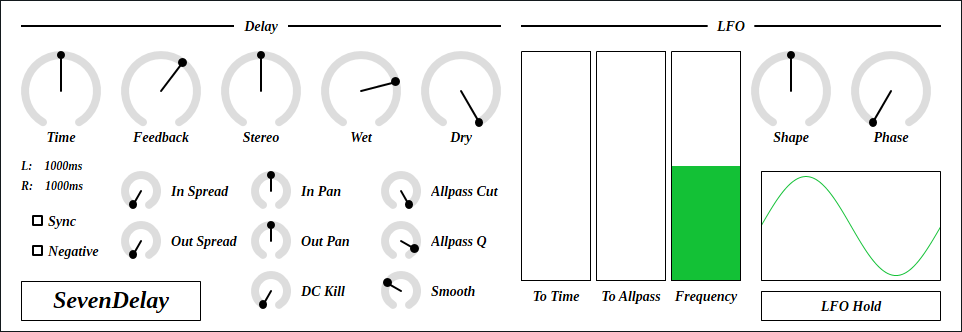

full - VST 3 (github.com) macOS - VST 3 (github.com) Update: 2025-08-30

SevenDelay is a stereo delay with 7th order lagrange interpolated fractional delay and 7x oversampling.
full - VST 3 (github.com) macOS - VST 3 (github.com) full package contains following builds.
Linux build is built on Ubuntu 24.04. If you are using distribution other than Ubuntu 24.04, plugin will not likely to run. In this case, please take a look at build instruction.
macOS package is recommended for macOS user. I can’t
purchase Apple Developer Program, therefore installation requires a
workaround to bypass Gatekeeper. Details of workaround are written in
Installation -> macOS Specific
section.
Feel free to contact me on GitHub
repository or ryukau@gmail.com.
You can fund the development through paypal.me/ryukau.
Move *.vst3 directory to:
/Program Files/Common Files/VST3/ for Windows.$HOME/.vst3/ for Linux./Users/$USERNAME/Library/Audio/Plug-ins/VST3/ for
macOS.DAW may provides additional VST3 directory. For more information, please refer to the manual of the DAW.
Notice: Some plugins don’t have presets provided by Uhhyou Plugins.
Presets are included in the plugin package linked at the top of this page. To install presets, follow the steps below.
presets directory placed in extracted
package.Uhhyou directory into an OS specific preset
directory (see below).Below is a list of preset directories for each OS.
/Users/$USERNAME/Documents/VST3 Presets$HOME/.vst3/presets/Users/$USERNAME/Library/Audio/PresetsPreset directory name must be the same as the plugin. If preset directory does not exist, create it.
If DAW doesn’t recognize the plugin, try installing C++
redistributable (vc_redist.x64.exe). Installer can be
found in the link below.
On Ubuntu 24.04, those packages are required.
sudo apt install libxcb-cursor0 libxkbcommon-x11-0If DAW doesn’t recognize the plugin, take a look at
Package Requirements section of the link below and make
sure all the VST3 related package is installed.
REAPER on Linux may not recognize the plugin. A workaround is to
delete a file ~/.config/REAPER/reaper-vstplugins64.ini
and restart REAPER.
Important: full package is not
confirmed working. When using full, try removing
following files.
Contents/Resources/DocumentationContents/x86_64-linuxContents/x86_64-winmacOS package doesn’t contain above files. Also, all
packages are in “ad-hoc signing” state set by codesign
command.
When trying to run plugin first time, following message may appear on macOS.
<PluginName>.vst3 is damaged and can't be opened. You should move it to the Trash.In this case, open terminal and try running one or both of
following command to unzipped .vst3 directory. Replace
/path/to/PluginName.vst3 according to your install
location.
xattr -rd com.apple.quarantine /path/to/PluginName.vst3
xattr -rc /path/to/PluginName.vst3Plugin may be considered as unsigned/un-notarized application. In this case, open System Preferences, go to Security & Privacy → General, then click the Open Anyway button. The offcial Apple help page linked below has screenshots for the procedure. See “If you want to open an app that hasn’t been notarized or is from an unidentified developer” section.
If the plugin is still not working, try changing install location
to /Library/Audio/Plug-ins/VST3/ or
/Users/$USERNAME/Library/Audio/Plug-ins/VST3/ whichever
still haven’t tried.
If all the above methods do not work, try following the steps below.
sudo spctl --master-disable.Beware that steps above degrades security of your system. To revert the settings, follow the steps below.
sudo spctl --master-enable.codesignNote This section may not relevant to
macOS packages. However it’s not verified. (GitHub
issue)
To use full package, following command might be
used.
sudo codesign --force --deep -s - /path/to/PluginName.vst3codesign might not be available without installing Xcode.
At first time, create color config file to:
/Users/USERNAME/AppData/Roaming/UhhyouPlugins/style/style.json
on Windows.$XDG_CONFIG_HOME/UhhyouPlugins/style/style.json on
Linux.
$XDG_CONFIG_HOME is empty, make
$HOME/.config/UhhyouPlugins/style/style.json./Users/$USERNAME/Library/Preferences/UhhyouPlugins/style/style.json
on macOS.style.json will be loaded for each time a plugin
window opens.
Several color themes are available on the link below. To use, copy
the text to style.json.
Below is an example of style.json.
{
"guiScale" : 1 ,
"fontFamily" : "Tinos" ,
"fontBold" : true ,
"fontItalic" : true ,
"foreground" : "#000000" ,
"foregroundButtonOn": "#000000" ,
"foregroundInactive": "#8a8a8a" ,
"background" : "#ffffff" ,
"boxBackground" : "#ffffff" ,
"border" : "#000000" ,
"borderCheckbox" : "#000000" ,
"borderLabel" : "#000000" ,
"unfocused" : "#dddddd" ,
"highlightMain" : "#0ba4f1" ,
"highlightAccent" : "#13c136" ,
"highlightButton" : "#fcc04f" ,
"highlightWarning" : "#fc8080" ,
"overlay" : "#00000088",
"overlayHighlight" : "#00ff0033"
}guiScale: GUI scaling. For example, 0.75
is 75%, and 2.0 is 200%.The minimum of guiScale is 0.01. The
maximum is practically non-existent (the max value of 64-bit
float).
Notice: If guiScale is too large, DAW
may place the “close” button on the plugin window out of screen,
making it unclickable.
Following is a list of font options.
fontFamily: Font family name.fontBold: Enable bold style when
true, disable when false.fontItalic: Enable italic style when
true, disable when false.System font can be used as fontFamily. To use
different fonts for different plugins, place *.ttf file
into custom font path:
*.vst3/Contents/Resources/Fonts.
Notice: If the combination of
fontFamily, fontBold,
fontItalic does not exist in custom font path, default
font of VSTGUI is used.
If fontFamily is set to empty string "",
then "Tinos"
is used as fallback. If the length is greater than 1 and the font
family name doesn’t exist, default font of VSTGUI is used.
Styles other than bold, italic or bold-italic are not supported by VSTGUI. For example, “Thin”, “Light”, “Medium”, and “Black” weights cannot be used.
Hex color codes are used.
First letter # is conventional. Plugins ignore the
first letter of color code, thus ?102938,
\n11335577 are valid.
Do not use characters outside of 0-9a-f for color
value.
Following is a list of color options. If an option is missing, default color will be used.
foreground: Text color.foregroundButtonOn: Text color of active toggle
button. Recommend to use the same value of foreground or
boxBackground.foregroundInactive: Text color of inactive
components. Currently, only used for TabView.background: Background color.boxBackground: Background color of inside of box
shaped components (Barbox, Button, Checkbox, OptionMenu, TextKnob,
VSlider).border: Border color of box shaped components.borderCheckbox: Border color of CheckBox.borderLabel: Line color of parameter section
label.unfocused: Color to fill unfocused components.
Currently, only used for knobs.highlightMain: Color to indicate focus is on a
component. Highlight colors are also used for value of slider
components (BarBox and VSlider).highlightAccent: Same as highlightMain.
Used for cosmetics.highlightButton: Color to indicate focus is on a
button.highlightWarning: Same as highlightMain,
but only used for parameters which requires extra caution.overlay: Overlay color. Used to overlay texts and
indicators.overlayHighlight: Overlay color to highlight current
focus.Right Click on the controls pops up a context menu provided by DAW.
Knob and slider provides following controls:
dB) parameters,
floor is applied after the value is converted to amplitude.When the value of Smooth is near zero and change the
value of Allpass Cut too fast, SevenDelay may output very
loud click noise. This is caused by the filter which becomes unstable
when cutoff frequency moves too fast. Recommendation is not to set
Smooth parameter too low unless you have some specific
purpose.
When the value of Time is set to minimum and the value
of Feedback is set to maximum, SevenDelay outputs direct
current (DC). To remove DC, Set DC Kill to be greater
than 1.0.
If the image is small, use Ctrl + Mouse Wheel or “View Image” on right click menu to scale.
Diagram only shows overview. It’s not exact implementation.

Delay time. Range is 0.0001 to 8.0.
Sync is on and Time is less than 1.0,
then delay time is set to Time / 16 beats.Sync is on and Time is greater or
equal to 1.0, then delay time is set to
floor(2 * Time) / 32 beats.Time seconds.Delay feedback. Range is 0.0 to 1.0.
L/R stereo offset. Range is -1.0 to 1.0.
Stereo is less than 0.0, then left channel delay
time is modified to timeL * (1.0 + Stereo).timeR * (1.0 - Stereo).Output volume of delayed signal. Range is 0.0 to 1.0.
Output volume of input signal. Range is 0.0 to 1.0.
Toggle tempo sync.
Toggle negative feedback. This may be useful when delay time is very short.
Panning controls. Range is 0.0 to 1.0.
In/Out Spread controls stereo spread.
In/Out Pan controls stereo panning.
These parameter can be used for inverse panning, ping-pong delay etc.
[InSpread, InPan, OutSpread, OutPan] to
[0.0, 0.5, 1.0, 0.5].[InSpread, InPan, OutSpread, OutPan] to
[1.0, 0.5, 0.0, 0.5].signalL = inL + spread * (inR - inL)
signalR = inL + (1.0f - spread) * (inR - inL)
if (pan < 0.5f) {
outL = (0.5f + pan) * signalL + (0.5f - pan) * signalR,
outR = signalR * 2.0f * pan,
}
else {
outL = signalL * (2.0f - 2.0f * pan)
outR = (pan - 0.5f) * signalL + (1.5f - pan) * signalR
}SFV allpass filter cutoff frequency. Range is 90.0 to 20000.0.
If Allpass Cut is 20000.0, filter will be
bypassed.
SFV allpass filter resonance. Range is 0.00001 to 1.0.
Cutoff frequency of biquad highpass filter. Range is 1.0 to 120.0.
DC Kill removes direct current from delay feedback
when the value is set to be greater than 1.0.
Parameter smoothing. Range is 0.0 to 1.0. Unit is seconds.
Some parameter may produce noise when the value is changed too
fast. Increasing Smooth reduces those noise.
LFO modulation amount to delay time. Range is 0.0 to 1.0.
LFO modulation amount to allpass cutoff frequency. Range is 0.0 to 1.0.
LFO frequency. Range is 0.01 to 100.0.
LFO waveform shape. Range is 0.01 to 10.0.
sign = 1 if (phase > π),
-1 if (phase < π),
0 if (phase == π)
lfo = sign * abs(sin(phase))^shapeLFO initial phase. Range is 0.0 to 2π.
LFO phase is reset to Phase for each time host starts
playing.
Toggle LFO phase hold. This may be useful for live performance.
style.json crashes
plugin.foregroundInactive.Bypass parameter was enabled in old
presets.processContext is
nullptr.virtual to destructor of common components.
This may prevent some cause of crash or memory leak.style.json.bypass parameter behavior. This fixes playing
all the notes at the moment of unmute, even if host sends note to
plugin while muting. This bug was only happening on the hosts which
respect VST 3 bypass parameter.In Pan and Out Pan from stereo
balance to stereo panning.To Allpass of LFO.DC Kill to 5.0 Hz.SevenDelay is licensed under GPLv3. Complete licenses are linked below.
If the link above doesn’t work, please send email to
ryukau@gmail.com.
VST is a trademark of Steinberg Media Technologies GmbH, registered in Europe and other countries.